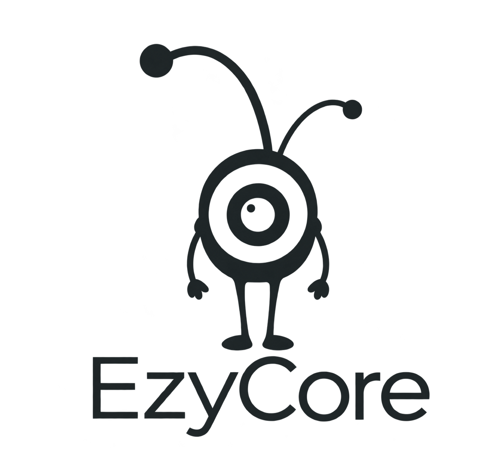

EzyCore
Logo a color, versión para fondo oscuro, variante monocromática y favicon con la mascota completa.
Color · fondo transparente
Color · para fondo oscuro
Monocromático · fondo transparente

Favicon · 16 / 32 / 64 px
SVG, PNG e ICO. La mascota completa, sin texto, en tamaños pequeños.